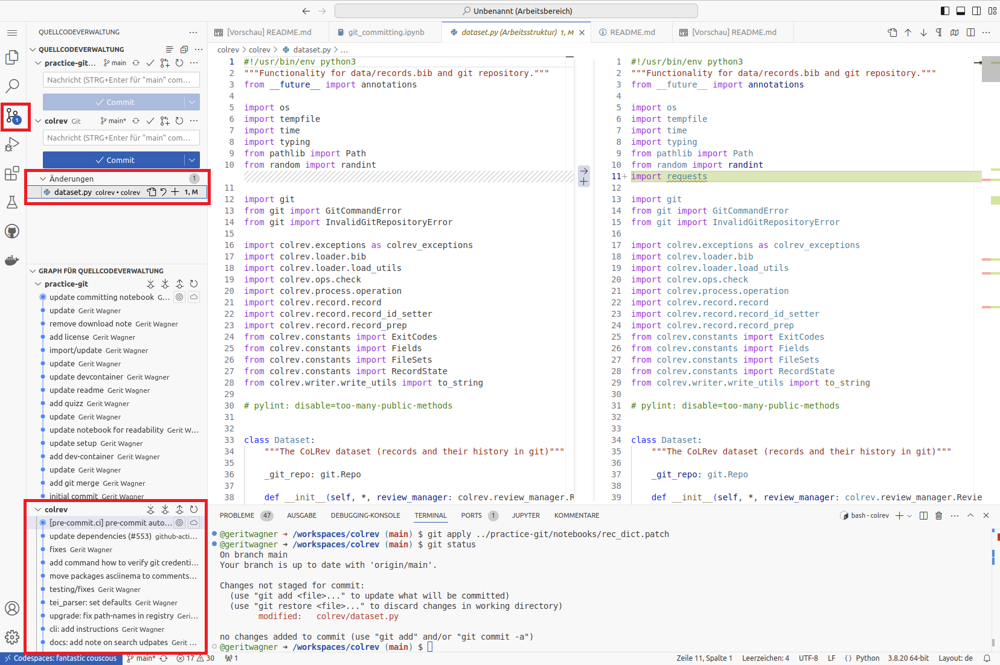

The notebook builds on our peer-reviewed pedagogical foundations.
The notebook builds on our peer-reviewed pedagogical foundations.
We  your feedback and suggestions on this notebook!
your feedback and suggestions on this notebook!
<strong>Concepts: Git areas</strong> <br><br>The slides explaining the Git areas are <a href="../output/02-git.html#part-2-committing" target="_blank">here</a>.With this notebook, you can practice committing changes in Git.
| Practice | Label | Time (min) |
|---|---|---|
| 1 | Clone the repository | 5 |
| 2 | Create, stage, and commit changes | 10 |
| 3 | Undo committed changes | 8 |
| 4 | Create Atomic commits | 10 |
| 5 | Undo changes (advanced) | 5 |
| 6 | Wrap-up | 2 |
| Overall | 40 |
 We are here to help if errors or questions come up!
We are here to help if errors or questions come up!
Task: Start GitHub Codespaces from the CoLRev repository{: target=“_blank”}.
Note: To create an empty git project, you would run git init.
<strong>Important:</strong> Make sure to copy the commands and enter them in the shell as shown in the screenshot. It is not possible to run the cells in this notebook.
<div style="clear: both;"></div>
<img src="../../material/codespace-shell.png" style="max-width: 100%; border-radius: 5px;">The status command provides an overview of the current state of the project and the files in the three sections. Therefore, you will need to run git status regularly.
Note: The comments after the hashtag (#) are ignored.
# Check the status of the project
git status
The git status command should print something like the following:
On branch main
Your branch is up to date with 'origin/main'.
nothing to commit, working tree clean
The last line indicates that there are no changes in the staging area (nothing to commit). The working directory has the same content as the last version in the git repository (working tree clean).
Next, we modify files (state: untracked/modified), mark them to be in the next commit (state: staged), and create the first version (state: committed). This corresponds to the three sections of a Git project.
Task: Open the README.md file in the colrev repository (shift + double click to open in a separate tab) and add your name to the project citation (# Citing CoLRevsection).
# Check the `git status` between each command
git statusTask: Open the CONTRIBUTING.md file and change it.
The git status should now show two files with changes in the working directory (state: modified)
We decide that the changes in the README.md file should be staged for the next commit. The changes in the CONTRIBUTING.md file are no longer needed.
Task: Use the commands suggested by git status to accomplish this.
This means that changes in the README.md are staged (to be committed).
The git status should now display:
On branch main
Your branch is up to date with 'origin/main'.
Changes to be committed:
(use "git restore --staged <file>..." to unstage)
modified: README.md
To commit the changes, we run
git commit -m 'add contributor'The -m 'add contributor' adds a short summary message, which is expected for every commit.
git status should reflect your expected state of files in the three Git sections.
To undo the last commit, we can simply run:
git reset --soft HEAD~1You should now have the README.md file in the staging area again.
Note: the HEAD~1 refers to the last commit.
Task: Run git status to see the changes.
We decide to discard our changes.
Task: Use the commands suggested by git status to do that.
The git status should show the following:
On branch main
nothing to commit, working tree clean
To analyze the specific changes, open the Git GUI:

It is good practice to create atomic commits, i.e., small changes that belong together. One should avoid large commits that modify many unrelated parts of the code base and pursue different objectives.
Analyze the following commits and discuss which ones are atomic and which ones combine changes that do not belong together (i.e., should be in separate commits). In addition, check the commit message (short summary at the beginning). Does the message clearly summarize the changes?
Atomic commit, ok.
Relatively atomic. There are a few changes beyond compute_language(). May be improved.
Many files changed. Changes not related to each other. Message refers to refactoring and testing, but the commit also adds functionality.
Many files changed, but the changes belong together. ok.
Atomic commit, ok.
It is ok to combine functionality, tests, and docs that belong together in one commit!
Optional: If you have the time, you may check the Conventional Commits{: target=“_blank”} specification.
To create atomic commits, you may need to add specific lines of code that should go into a commit, leaving other changes in the working directory.
The changes are provided in the rec_dict.patch file, which must be placed in the project’s working directory. To apply it, run:
# Suggests to rename the method but also introduces unrelated changes.
git apply rec_dict.patch
# Different files were modified by the patch
git statusTask: Use the Git GUI to check the changes that were introduced by the patch.
In the following, we would like to add only the changes in lines related to the load_records_dict method and the skip_notification parameter (using -p for a partial git add):
# Add specific lines of code from the colrev/dataset.py
# using y/n to add or skip (confirming with ENTER)
git add -p colrev/dataset.pyTask: Check whether the correct lines were added! Create a commit containing the relevant changes. Afterward, discard the remaining changes.
To undo committed changes, there several options:
git revert COMMIT_SHA --no-editgit reset --soft COMMIT_SHA (*)git commit --amend to modify the last commit (*)If you have the time, try the different undo operations in the session.
(*) Important: only amend commits that are not yet shared with the team. Otherwise, a revert is preferred.
<strong>Info</strong> Once you have committed changes, Git takes care of the data and it is very hard to lose the data. Uncommitted data can be lost more easily. Therefore, commit often!<br><br> Even if you run <code>git reset --hard ...</code>, you can still recover commits using <code>git reflog</code>. Committed data will only be lost permanently if you run <code>git reflog expire --expire=now --all</code> and <code>git gc --prune=now --aggressive</code>. If the commits are already on GitHub, you would need <code>git push --force</code> and the changes may also be synchronized in other local repositories. <br><br>Avoid options like <code>--force</code>, <code>--hard</code>, or <code>--aggressive</code>. Use them only if you know what you are doing.üéâüéà You have completed the Git commit notebook - good work! üéàüéâ
In this notebook, we have learned to
git statusgit add, git commit and git restoreRemember to delete your codespace here{: target=“_blank”} (see instructions).